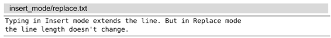
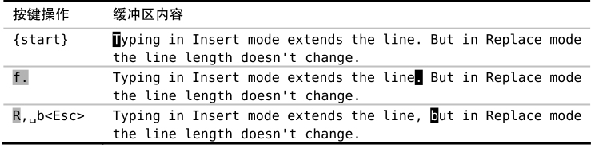

）。如果把光标移到制表符上，然后进入替换模式，那么我们所输入的下一个字符将会替换制表符。假设‘tabstop’选项设置为8（这是缺省值），那么该操作的结果就是把8个字符替换成了一个字符，这将大幅缩短当前行的长度。
）。如果把光标移到制表符上，然后进入替换模式，那么我们所输入的下一个字符将会替换制表符。假设‘tabstop’选项设置为8（这是缺省值），那么该操作的结果就是把8个字符替换成了一个字符，这将大幅缩短当前行的长度。技巧19用替换模式替换已有文本
在替换模式中输入会替换文档中的已有文本，除此之外，该模式与插入模式完全相同。
假设有如下一段文本：

我们想把这两个单独的句子合并成一句话，为此，需要把句号改成逗号，并将单词“But”中的“B”改为小写。下例展示了如何用替换模式完成这项工作。

用R命令可以由普通模式进入替换模式，然后就如例中所示，输入“,␣b”替换原有的“.␣B”字符。完成替换后，就可以按<Esc>键返回普通模式。如果你的键盘上有<Insert>键，那么你也可以用该键在插入模式和替换模式间切换，不过并非所有的键盘都有这个键。
用虚拟替换模式替换制表符
某些字符会使替换模式变得复杂化。以制表符为例，在文件中它以单个字符表示，但在屏幕上它却会占据若干列的宽度，此宽度由‘tabstop’设置决定（参见:h 'tabstop'）。如果把光标移到制表符上，然后进入替换模式，那么我们所输入的下一个字符将会替换制表符。假设‘tabstop’选项设置为8（这是缺省值），那么该操作的结果就是把8个字符替换成了一个字符，这将大幅缩短当前行的长度。
不过Vim还有另外一种替换模式，称为虚拟替换模式（Virtual Replace mode）。该模式可由gR命令触发，它会把制表符当成一组空格进行处理。假设我们把光标移到一个占屏幕8列宽的制表符上，然后切换到虚拟替换模式，在输入前7个字符时，每个字符都会被插入到制表符之前；最后，当输入了第8个字符时，该字符将会替换制表符。
在虚拟替换模式中，我们是按屏幕上实际显示的宽度来替换字符的，而不是按文件中所保存的字符进行替换。这会减少意外情况的发生，因此我建议在可能的情况下尽量使用虚拟替换模式。
Vim也提供了单次版本的替换模式及虚拟替换模式。r{char}和gr{char}命令允许我们覆盖一个字符，之后马上又回到普通模式（参见:h r）。